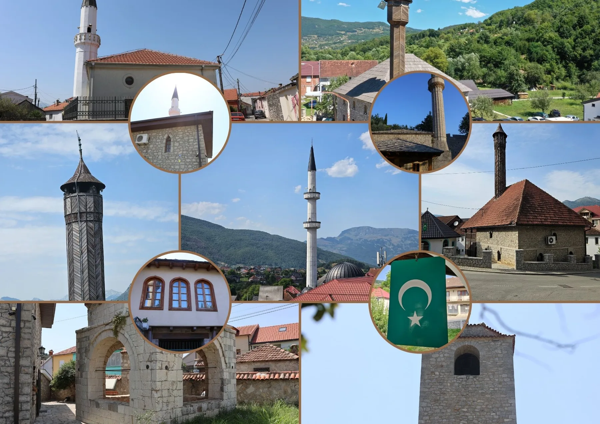
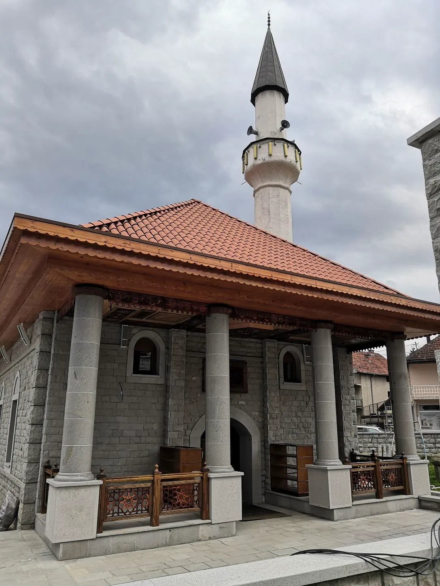

Od vakufa do zajednice
Bošnjačka duhovna i kulturna baština

Baština sačuvana u digitalnom prostoru
Projekat „Od vakufa do zajednice: Bošnjačka duhovna i kulturna baština“ usmjeren je na istraživanje, dokumentovanje i savremenu interpretaciju bošnjačke duhovne i kulturne baštine u Crnoj Gori, sa posebnim fokusom na vakufe, džamije i druge islamske objekte. Ovi prostori predstavljaju ključne nosioce duhovnog, kulturnog i istorijskog identiteta bošnjačke zajednice, ali su često nedovoljno vidljivi u savremenom javnom i digitalnom prostoru.‚
Cilj projekta jeste da se kroz digitalno mapiranje, analizu i savremenu interpretaciju doprinese očuvanju i većoj dostupnosti informacija o bošnjačkim vakufima i islamskim objektima, kao i jačanju svijesti o njihovoj ulozi u formiranju zajednice, kulturnih praksi i kolektivnog pamćenja. Digitalni alati omogućavaju da se ova baština predstavi na pristupačan, edukativan i interaktivan način, povezujući prošlost sa savremenim društvenim kontekstom.
Projekat ima i širi društveni značaj, jer doprinosi afirmaciji kulturne raznolikosti, međukulturnog dijaloga i razumijevanja bogatstva zajedničkog nasljeđa u Crnoj Gori. Kroz edukativne sadržaje i javnu dostupnost rezultata, projekat podstiče aktivno učešće zajednice, naročito mladih, u procesu očuvanja i valorizacije bošnjačke duhovne i kulturne baštine.
Piše: Selma Tuzović
Pregled po opštinama
Svi lokaliteti i sadržaji iz izvornog dokumenta organizovani su po geografskim cjelinama.
 27 lokaliteta / cjelinaBarIstraži →
27 lokaliteta / cjelinaBarIstraži → 2 lokaliteta / cjelinaBeraneIstraži →
2 lokaliteta / cjelinaBeraneIstraži →
21 lokaliteta / cjelinaBijelo PoljeIstraži → 1 lokaliteta / cjelinaBudvaIstraži →
1 lokaliteta / cjelinaBudvaIstraži → 1 lokaliteta / cjelinaCetinjeIstraži →
1 lokaliteta / cjelinaCetinjeIstraži → 8 lokaliteta / cjelinaGusinjeIstraži →
8 lokaliteta / cjelinaGusinjeIstraži → 1 lokaliteta / cjelinaHerceg NoviIstraži →
1 lokaliteta / cjelinaHerceg NoviIstraži → 1 lokaliteta / cjelinaNikšićIstraži →
1 lokaliteta / cjelinaNikšićIstraži → 14 lokaliteta / cjelinaPetnjicaIstraži →
14 lokaliteta / cjelinaPetnjicaIstraži → 6 lokaliteta / cjelinaPlavIstraži →
6 lokaliteta / cjelinaPlavIstraži → 6 lokaliteta / cjelinaPodgoricaIstraži →
6 lokaliteta / cjelinaPodgoricaIstraži →